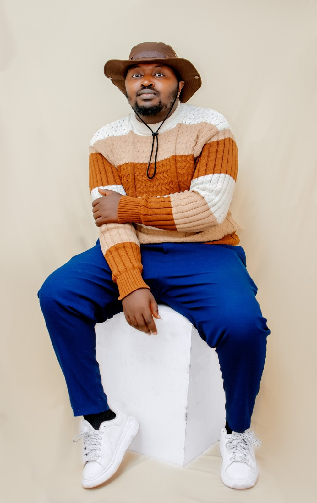

Photography & studio
Portraits, events, weddings, celebrations and documentary photography.
↗MULTIMEDIA CREATOR · RWANDA
PHOTOGRAPHY / FILM / DESIGN / DIGITAL
I'm Jean Bosco Nsengiyumva - a photographer, videographer and graphic designer creating visual content that connects people, places and ideas.

I work across photography, video and design to document real moments and shape clear, thoughtful visual communication.
Event coverage, agricultural field stories and graphic design, including field activity in Burera.
Select a cover image to explore the complete photo gallery for that event or project.
From capturing moments on location to shaping the final edit, I enjoy building videos with a clear message and a human point of view.
Discuss a video project ↗THE PERSON BEHIND THE LENS
I’m Jean Bosco, a Rwanda-based multimedia creator with a background in graphic design, photography, videography and technology.
My experience spans creative production, field coordination, digital communication and community engagement. I enjoy turning ideas and real-life experiences into thoughtful visual stories.
Creative production and practical digital support for people, organizations and businesses.
Portraits, events, weddings, celebrations and documentary photography.
↗Video coverage, editing, post-production and visual storytelling.
↗Brand identity, campaign materials, layouts and promotional design.
↗Website design, hosting, maintenance .
↗Content planning, page management and digital communication.
↗Help desk support and practical IT support.
↗Creative work, technology and field experience — shaped by projects, teams and communities.
SOLEKTRA RWANDA Ltd
VIBRANT DIGITAL SOLUTIONS Ltd
AGRIRESEARCH UNGUKA Ltd
RiSA Digital Ambassador Program
Previous work/client relationships as supplied. These are not presented as independent endorsements.
HAVE A PROJECT IN MIND?
For creative collaborations, photography, video production or digital projects, I'd be glad to hear from you.
jbosconseng98@gmail.com ↗